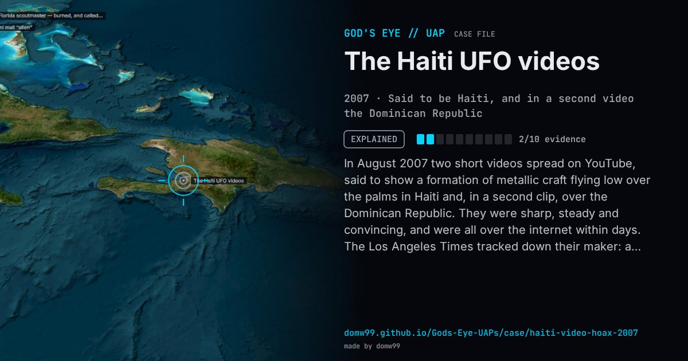

The Haiti UFO videos

In August 2007 two short videos spread on YouTube, said to show a formation of metallic craft flying low over the palms in Haiti and, in a second clip, over the Dominican Republic. They were sharp, steady and convincing, and were all over the internet within days. The Los Angeles Times tracked down their maker: a professional animator from France who had trained at a leading art school, worked on feature films and had made the clips by himself in about 17 hours as a showcase for a film project. The case is a standard example of how cheap 3D tools made convincing UFO footage easy to fake.
Explanation
Computer animation. The Los Angeles Times traced the videos in August 2007 to a French animator, known online as “Barzolff”, who had made them as a test for a feature film; he said it took him about 17 hours on a laptop with off-the-shelf 3D software, and later posted a video owning up.
What was seen
Shape: Several metallic, many-armed craft flying low over palm trees
Witnesses: None: the only record is the anonymous videos
Duration: Two videos of under two minutes each